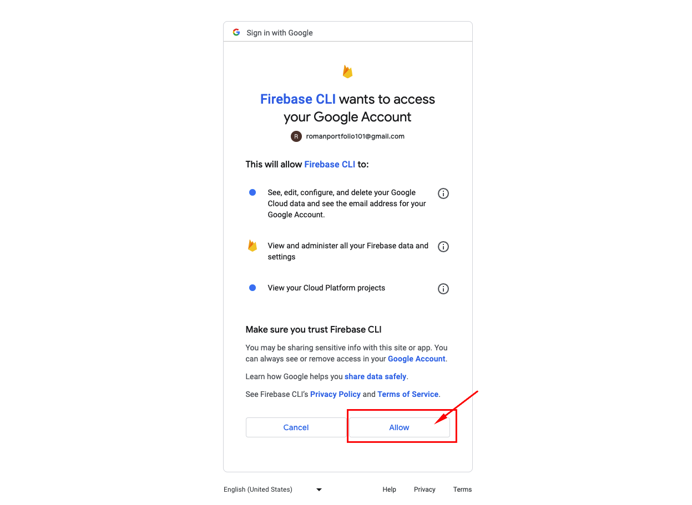

Welcome to the exciting world of Flutter Web!
In this workshop, you've been building your own personal portfolio Flutter web app, with hard-coded data. In a real-life scenario, you might want to pull the data that feeds your portfolio web app from an external source (like a backend service, or a database) and that's where Firebase comes in!
What is Firebase?
Firebase is an app development platform that helps you build and grow apps and games users love. It is backed by the Google Cloud and trusted by millions of businesses around the world, and it contains a suite of products for building robust mobile and web apps that can scale to billions of users.
In this session we'll be using Firebase Cloud Firestore, a NoSQL document database that lets you easily store, sync, and query data for your mobile and web apps - at global scale. One of its best features is its serverless nature, in which you can stand up a Firebase backend without provisioning your own servers. You can access Cloud Firestore with traditional client libraries such as Node, Python, Go and Java, and in this codelab we'll access it via Dart through the FlutterFire library.
We will be working on the Free-Tier of Firebase (Spark - No cost $0/month) and you can see the full plan details and the decent quotas you get under this tier, which is enough to get started, by clicking on this link.
Firebase Data Model: Quick Overview
Unlike a SQL database, there are no tables or rows. Instead, you store data in documents, which are organized into collections.

Each document contains a set of key-value pairs. Cloud Firestore is optimized for storing large collections of small documents.
All documents must be stored in collections. Documents can contain subcollections and nested objects, both of which can include primitive fields like strings or complex objects like lists.
Documents
In Cloud Firestore, the unit of storage is the document. A document is a lightweight record that contains fields, which map to values. Each document is identified by a name.

Collections
Documents live in collections, which are simply containers for documents. For example, you could have a products collection to contain your various products, each represented by a document:

Cloud Firestore is schemaless, so you have complete freedom over what fields you put in each document and what data types you store in those fields. Documents within the same collection can all contain different fields or store different types of data in those fields. However, it's a good idea to use the same fields and data types across multiple documents, so that you can query the documents more easily.
In Firestore is how we will store the data that will power our application.
Pulling Data from Firebase Cloud Firestore
There are three ways to retrieve data stored in Cloud Firestore. Any of these methods can be used with documents, collections of documents, or the results of queries:
- Call a method to get the data once: we will use this to display the initial data from our data store.
- Set a listener to receive data-change events: we will use this to respond to updates to our data so we keep the application in sync with the backend.
- Bulk-load Firestore snapshot data from an external source via data bundles. We will not touch this approach in this session, but feel free to explore this feature on your own.
When you set a listener, Cloud Firestore sends your listener an initial snapshot of the data, and then another snapshot each time the document changes.
In this session, we'll be exploring the simplest case, which is calling a method to get the data once, but definitely we'd recommend exploring the real-time capabilities of Cloud Firestore since it's one of their most highlighted features.
In this section we'll create a Firebase project, and we'll create our first Cloud Firestore database and create the collection of documents that will power our portfolio web app.
Let's start by navigating to the Firebase Console by clicking on this link. Use a valid Gmail account, preferably one that you haven't used before for setting up Google Cloud or Firebase, and with no billing accounts attached to it. Remember this Gmail account for later steps in this workshop.
Create your first project by clicking on the Create a Project button:
In the wizard, provide a name for your project, and accept the terms by checking the checkboxes (if shown):
In the next step, disable Google Analytics as we don't need it for this project (you can enable later if needed). Then, click on Create Project:
Wait until the project gets created (this may take a few seconds):
Once completed, you should get the following message that your project is ready. Click Continue to proceed:
You've landed at the home page of the Firebase Console, where you can see all features in Firebase at your disposal. We'll focus on Firebase Cloud Firestore for now, so in the left navigation menu, under Build, click on Firestore Database:
In the Cloud Firestore landing page, click on Create database:
On the first step of the database creation wizard, select to Start in test mode, which will lower the security rules on the database so we can set it up quickly (this last 30 days, so make sure to update your security rules after a month). Click Next:
Next step deals with the location of the Cloud Firestore database. Pick a multi-regional location for increased availability - you can keep the default nam5 (United States) if you want. Click Enable:
Wait a few seconds until your database is provisioned in the Google Cloud:
We've landed on our Cloud Firestore database called roman-portfolio, after the name of the project. We must start now by creating a collection, which will be the container for our documents. Create your first collection by clicking on the Start collection button:
Assign a unique ID to our collection - let's call it pageContent as this collection will hold all our page content; click "Next":
With our pageContent collection created, you can proceed to start adding documents. Let's add a first document to this collection. You can either assign it your own ID, or use the Auto-ID option, but in our case, each document in this collection should correspond to a Flutter page from our web app. Add the ID welcomePage since we'll be building the content for our welcome page, and the following fields:
- name: (type string) Roman (best if you put your name here!)
- title: (type string) Flutter GDE (or your own title!)
- subTitle: (type string) Certified Cloud Architect (or your own subtitle)
- imgPath: (type string) https://avatars.githubusercontent.com/u/5081804?s=400&u=04dc8bfa749d69165ab08ffba89edd5f095ba21d&v=4 (or your own image hosted somewhere)
- greetings: (type array) and add the following values (or whatever):
- ‘Hello', ‘Hola', ‘Bonjour', ‘Olá', ‘Ciao', ‘Namaste', ‘Kon'nichiwa'
Your document should look like below. Click Save when ready:
After saving, your document-collection structure should look like this (please ensure this is the case):
Awesome! With our database fully setup and loaded with data, let's go back to Flutter to connect it to this newly created Cloud Firestore database!
With the Firebase project created and our Firestore database loaded and hosted in the Google Cloud, we need a way to connect to it to retrieve the data stored through our Flutter Web App. For that, we'll need FlutterFire.
FlutterFire is a set of Flutter plugins which connect your Flutter application to Firebase.
First, we need to set up the FlutterFire CLI, which is a useful tool which provides commands to help ease the installation process of FlutterFire across all supported platforms.
Installing the FlutterFire CLI
Let's install it first.
The FlutterFire CLI depends on the underlying Firebase CLI. If you haven't already done so, make sure you have the Firebase CLI installed on your machine. Also make sure you have node.js on your machine and Install the Firebase CLI via npm by running the following command:
npm install -g firebase-tools
Next, install the FlutterFire CLI by running the following command:
dart pub global activate flutterfire_cli
After running the above command, you will either have to add the FlutterFire executables to your PATH, or you can run the following command right after, since the next set of commands will depend on FlutterFire being on the PATH (at least for the current session):
FOR MAC:
export PATH="$PATH":"$HOME/.pub-cache/bin"
FOR WINDOWS:
set PATH=%PATH%;C:\Users\{Your_Username}\AppData\Local\Pub\Cache\bin
And you should be all set. Let's proceed with the rest of the setup.
The FlutterFire CLI extracts information from your Firebase project and selected project applications to generate all the configuration for a specific platform.
First, you must be logged in to your Firebase project via the Firebase CLI with THE SAME EMAIL YOU CREATED YOUR FIREBASE PROJECT WITH; confirm this by running the following command:
firebase login
You will get a prompt asking whether you want Firebase to collect usage - say no for now by typing ‘n':
Then you'll be presented with the web authentication page for the Firebase CLI, where you must Allow firebase permissions to acces your Google Account:

Close the browser window and come back to the command line, where you'll see the success message:
If none of that worked or you were previously logged in with a different Gmail account, just execute firebase logout then run the login workflow above again, and you should be good to go.
In the root of your application, run the configure command:
flutterfire configure
The configuration command will guide you through a number of processes:
- Fetches all Firebase projects under the account associated with the logged in user; in our case it fetched our roman-portfolio project. Pick it by using the keyboard arrow keys and press ENTER:
Next prompt asks which platforms are you planning to support; in our case we'll only do web so use the SPACE BAR on your keyboard to add / remove selections; just keep the web. Then hit ENTER:
After this step, your project will generate some boilerplate code, especially an important file called firebase_options.dart inside the lib folder. This .dart file contains all the required configuration and connection strings to be able to connect to your Firebase project and thus all the services you have enabled there - in our case, the Firebase Cloud Firestore database we set up earlier.
The auto-generated file (firebase_options.dart) we'll place it in a more logical location. Create a folder inside lib/shared called repositories and drag it inside. We'll deal with it later.
Import the Firebase Core packages
Next, let's import some required packages that facilitate the communication to Firebase from Flutter.
Before any Firebase services can be used, you must first install the firebase_core plugin, which is responsible for connecting your application to Firebase.
Install the plugin by running the following command from the project root:
flutter pub add firebase_core
Initialize Firebase
Next the generated options need to be provided to the initializeApp method. Since this is an asynchronous operation, the main function can be modified to ensure initialization is complete before running the application.
First import the firebase_core plugin and generated firebase_options.dart file in your main.dart file as follows:
//... in the lib/main.dart, at the top of the file:
//... rest of the imports omitted for brevity
import 'package:firebase_core/firebase_core.dart';
// make sure to import the auto-generated file from shared/repositores
import 'package:roman_web_portfolio/shared/repositories/firebase_options.dart';
Next, within the main function, ensure WidgetsFlutterBinding is initialized and then initialize Firebase, all before the runApp method. DO NOT FORGET TO ADD THE ASYNC KEYWORD TO THE MAIN METHOD since this is an async call. Copy / paste the necessary information and leave the runApp as-is:
// ... updated main() method in the main.dart
void main() async {
WidgetsFlutterBinding.ensureInitialized();
await Firebase.initializeApp(
options: DefaultFirebaseOptions.currentPlatform,
);
// YOUR RUNAPP METHOD GOES HERE...
// runApp(...)
}
And this is how the updated main method will look like with the rest of the code (do not copy - just confirm it looks like it):
On its own, the firebase_core plugin provides basic functionality for usage with Firebase. FlutterFire is broken down into individual, installable plugins that allow you to integrate with a specific Firebase service. Let's install the plugin for connecting to our Firebase Cloud Firestore database.
Before proceeding with this step, make sure that firebase_core is installed and Firebase initialized, therefore make sure the previous step is complete.
Add dependency
On the root of your Flutter project, run the following command to install the plugin:
flutter pub add cloud_firestore
Rebuild your app
Once complete, rebuild your Flutter application:
flutter run -d chrome
With that set up, let's now start pulling data from Firestore by tapping into the available API, but first let's assemble the required plumbing to achieve so.
Let's create some files that will support the retrieval of data from an external source, not just necessarily from Firebase, but in our case we may make it a bit coupled to Firebase since it will be our main way to retrieve its data, but at least we'll make it so we can have the ability to mock it and make it testable down the road.
Create enums for the documents and collections
This part you can do it any way you deem appropriate; I like using enum values instead of hard-coded strings, so I will create two enums: one for the names of collections (DatabaseCollections) and another one for the names of the documents (the data envelopes) (DatabaseDocs). Go to the lib/helpers/enums.dart file and add the following enumerations:
// inside the enums.dart
// other enums omitted for brevity
enum DatabaseCollections {
pageContent
}
enum DatabaseDocs {
welcomePage,
twitterPage,
linkedInPage,
githubPage,
webPage,
}
Each enum will represent the name with which we'll retrieve the corresponding collection and document from Firestore respectively.
Let's do some refactoring to the WelcomePageModel since we want it to receive the data coming from Firestore and populate its properties accordingly.
Refactor the WelcomePageModel
In the features/welcome/data/models/welcome_page.model.dart file, let's add a factory method for data mapping, as follows:
// inside the welcome_page.model.dart
// ... rest of the code omitted for brevity
factory WelcomePageModel.fromDatabase(Map<String, dynamic> doc) {
return WelcomePageModel(
name: doc['name'],
title: doc['title'],
subTitle: doc['subTitle'],
imgPath: doc['imgPath'],
greetings: (doc['greetings'] as List<dynamic>).map((e) => e.toString()).toList()
);
}
Notice that the factory method fromDatabase()'s only job is to receive the incoming data from Firestore and map it to the corresponding properties of this model - simple as that. We'll invoke this once we fetch the data from the db, but see that we receive it as a Map, meaning it could also be from another source other than Firebase.
Let's do some data fetching now!
Fetch the data from Firestore
Inside the shared/repositories folder, let's add an interface that will stand as the contract that any entity wanting to fetch data from a database to populate our pages should follow. Create a file called idb_provider.dart and add the following class (along with required imports):
abstract class IDBProvider {
Future<T> getPageDataFromDB<T>(
Function dataParseFunc,
String collectionName,
String docName
);
}
Notice how we are using Generics from Dart to reduce code duplication. We are creating a contract for an implementing class to return a Future of type T (the T will be any of our page models), also it will take a function reference that will be used to parse the data (the fromDatabase() method), as well as receive the corresponding collection name (from the DatabaseCollections enum) and document name (from the DatabaseDocs enums).
Create a corresponding implementing class in the same folder (shared/repositories) called DatabaseProvider inside a file called database_provider.dart and implement the interface above; your code should look like this:
class DatabaseProvider implements IDBProvider {
final Ref ref;
DatabaseProvider(this.ref);
@override
Future<T> getPageDataFromDB<T>(Function dataParseFunc, String collectionName, String docName) {
Completer<T> pageCompleter = Completer();
var db = ref.read(firebaseDbInstanceProvider);
db.collection(collectionName)
.doc(docName).get()
.then((pageDoc) {
T pageDocData = dataParseFunc(pageDoc.data() as Map<String, dynamic>) as T;
pageCompleter.complete(pageDocData);
}).catchError((error) {
pageCompleter.completeError(error);
}).onError((error, stackTrace) {
pageCompleter.completeError(error!);
});
return pageCompleter.future;
}
}
Notice how this class implements a constructor that takes in a Ref instance. We'll refer to this later, but so far so good.
Let's dissect the code.
First, we create a Completer so we can return a Future instance of type T while the operation is in play - we could introduce a small delay to improve the user experience and see the spinner for a bit.
Then we use the ref instance to read the firebaseDbInstanceProvider which fetches a Firestore instance for us.
Out of this instance, we call the db.collection using the collectionName parameter from the DatabaseCollections enum (i.e. DatabaseCollections.pageContent.name) as the name of the collection in Firestore, followed by a call to the document we're interested in (i.e. the one we created earlier in the Firebase Console - welcomePage from the DatabaseDocs enum).
We invoke the get() method to return a Future to which we hook up a promise using the .then() chain method, so we can receive a DocumentSnapshot instance asynchronously.
Inside the .then() callback, the received document snapshot instance (a DocumentSnapshot called pageDoc) gets processed through a function pointer or callback (dataParseFunc) whose job will be to take the call to data(), which spits out a Map<String, dynamic>, and return an instance of T.
Our newly populated T instance is fed into the Completer, so whoever is listening on the future returned earlier, now will be notified.
Notice how we are also catching errors and returning it via the same completer by using the available completeError method available in the completer. In the event of an error, the UI will process it in the error condition of the FutureProvider instance being used.
Now that we have these pieces in place, let's bring in some of the providers that will feed our Firebase Firestore instance. Go to the lib/shared/providers folder, and inside the shared_providers.dart file, add the following providers (with required imports):
// inside the shared_providers.dart
// rest of the code omitted
final firebaseDbInstanceProvider = Provider<FirebaseFirestore>((ref) {
return FirebaseFirestore.instance;
});
final dbProvider = Provider<IDBProvider>((ref) {
return DatabaseProvider(ref);
});
First, we create a provider that wraps an instance of FirebaseFirestore.instance; this way we can mock it up in the future and inject it as a dependency anywhere else where ref can be accessed - just like any other provider.
Second, we create an instance of IDBProvider - in our case, a concrete implemention of it, thanks to the DatabaseProvider, and see how we're injecting the ref instance supplied to the wrapping provider - we'll use it to internally fetch an instance of Firestore. By following this approach we can replace it with mocked versions for testing.
OK, so now where do we plug this code in?
Let's continue with the refactoring!
Replace the mocked data by real data
Remember how we are currently using the MockWelcomeRepository repository to feed synthetic welcome data to our page? Well, check this out now!
Go go the features/welcome/data/repositories/welcome.repository.dart and add the following code (with the proper imports):
class WelcomeRepository implements IWelcomeRepository {
final Ref ref;
WelcomeRepository(this.ref);
@override
Future<WelcomePageModel> getWelcomePageData() {
return ref.read(dbProvider).getPageDataFromDB(
WelcomePageModel.fromDatabase,
DatabaseCollections.pageContent.name,
DatabaseDocs.welcomePage.name
);
}
}
See how now we are ready to use a concrete implementation of welcome data repository that will fetch us real data from the database. We use the injected ref instance and call the dbProvider provider, which implements the method getPageDataFromDB(), and since this returns a future as well, we just pass it right through for any interested entities to handle it accordingly down the line.
Now go to the features/welcome/presentation/providers/welcome_page.providers.dart and in the welcomeRepositoryProvider, replace the mock version by the newly added actual implementation, as such:
final welcomeRepositoryProvider = Provider<IWelcomeRepository>((ref) {
return WelcomeRepository(ref);
});
Rebuild the app and take it for a spin. After reloading the app, you will see now the data you put in the Firestore database come through and get displayed in the UI. But did you even see us touch the UI at all? That's how well architected this app is becoming - we were able to swap just the mock implementation by the actual implementation and the app just continued working as normal. Don't you love well-architected apps? Me too!
The cool thing is that you hardly notice the difference, and another cool thing is that the data gets cached - one of the benefits of Riverpod!
Your challenge would be to go to the Firebase Console and create a separate document for each of the pages, under the existing collection called pageContent:
- Create a document called twitterPage containing the corresponding content to feed the Twitter page (use the mocked content):

- Create a document called linkedInPage containing the corresponding content to feed the LinkedIn page (use the mocked content):
- Create a document called githubPage containing the corresponding content to feed the Github page (use the mocked content):
- Create a document called webPage containing the corresponding content to feed the Web page (use the mocked content):
Refactor each page model to add its corresponding fromDatabase factory method
Make sure to go to each page model (LinkedInPageModel, WebPageModel, GithubPageModel, TwitterPageModel) and create the factory method fromDatabase() that takes in a Map of <String, dynamic> coming from Firestore, used to map each key-value pair to its corresponding properties.
Note: In order to map the icon fields from Firestore from each of the corresponding page documents, the document model mapping would look something like this, using the existing PersonalPortfolioIcons.iconMap mapping:
/// hint example using the WebPageModel model class:
factory WebPageModel.fromDatabase(Map<String, dynamic> doc) {
return WebPageModel(
icon: PersonalPortfolioIcons.iconMap[doc['icon']]!, // <-- we feed the doc['icon'] to the map
title: doc['title'],
subTitle: doc['subTitle'],
url: doc['url']
);
}
Create the corresponding repositories
Make sure each feature's actual repository is getting the ref instance injected, and inside you call the corresponding ref.read(dbProvider).getPageDataFromDB(), as well as pass the appropriate parameters per page. Follow the same implementation as in the welcome page repository; replace the mock repositories by the actual repositories once complete, and you should be good to go.
Here's a hint (i.e. for the WebPageRepository):
@override
Future<WebPageModel> getWebPageData() {
return ref.read(dbProvider).getPageDataFromDB(
WebPageModel.fromDatabase,
DatabaseCollections.pageContent.name,
DatabaseDocs.webPage.name
);
}
You may have noticed that upon navigating to either one of the pages, it still takes a a bit over a second to fetch the data for each of the pages. Once the data is retrieved, Riverpod caches it internally for later use. If you fetch the data again (before the provider gets disposed), a new network request is not actually made - Riverpod just pulls it from its internal cache.
So let's try preloading all the data upfront (during the spinner in the splash screen), that way by the time we enter the app, all data will already be cached and the experience will be much smoother.
Creating the infrastructure to fetch all data upfront
Since we will preload the data from the splash screen, let's create a viewmodel that will encapsulate this logic.
Go to the features/splash/presentation and create a new subfolder called viewmodels; add a file called splash_page.viewmodel.dart. Add the following code:
class SplashPageViewModel {
final Ref ref;
SplashPageViewModel(this.ref);
Future<bool> preloadPages() {
Completer<bool> preloadCompleter = Completer();
// rest of the code goes here...
return preloadCompleter.future;
}
}
We create a new viewmodel class called SplashPageViewModel with a method called preloadPages(), which returns a Future of type bool thanks to a Completer, since what we want to do is wait (that's the hint!) for all pages' Futures to return, and if successful, we return true or false accordingly.
How do we wait for all pages' Futures? By using Future.wait, passing the list of all pages' Futures and just waiting for their completion.
Add the following code before the return statement of the preloadPages() method (add the required imports):
// wait for all pages' futures to return
Future.wait([
ref.read(welcomeProvider.future),
ref.read(twitterProvider.future),
ref.read(linkedInProvider.future),
ref.read(githubProvider.future),
ref.read(webpageProvider.future),
]).then((value) {
preloadCompleter.complete(true);
}).catchError((error) {
preloadCompleter.completeError(error);
}).onError((error, stackTrace) {
preloadCompleter.completeError(error!);
});
What the above code will do is read each FutureProvider, hold on to its future, and wait for all of them to complete. If any of them fails, the whole operation fails - this is an atomic operation.
If all of them succeed, we just complete the completer with true and go about our way. We don't need the value returned by the wait, which is a list of all the values that the futures produced, as the data is already cached in each corresponding provider.
Let's now create providers around this implementation, so we can consume it from the splash page.
Create the corresponding providers for the SplashPageViewModel
Inside the splash feature, under presentation, create a new sub-folder called providers; add a file called splash_page.providers.dart and add the following code (with required imports):
final splashPageViewModelProvider = Provider((ref) {
return SplashPageViewModel(ref);
});
final splashPageFutureProvider = FutureProvider<bool>((ref) {
var splashVM = ref.read(splashPageViewModelProvider);
return splashVM.preloadPages();
});
Notice how we create a regular Riverpod Provider to wrap the SplashPageViewModel, and in turn, we read it in a separate FutureProvider type bool, where we call the preloadPages() method. Now let's go to the UI and consume this.
Reading the splashPageFutureProvider in the UI
With all of this in place, let's integrate this into the splash page.
Go to the splash/presentation/pages/splash_page.dart file and let's do some refactoring:
- First, convert the SplashPage widget from a StatelessWidget to a ConsumerWidget, that way we get a WidgetRef through the build method.
class SplashPage extends ConsumerWidget {
static const String route = '/splash';
const SplashPage({super.key});
@override
Widget build(BuildContext context, WidgetRef ref) {
// rest of the code goes here...
}
}
Inside the build method, add the following code (with the proper imports):
// ... inside the build method:
var splashFuture = ref.watch(splashPageFutureProvider);
var loadingMessage = const SplashLoading(message: 'Loading an awesome,\nKick-ass Profile...');
return Scaffold(
backgroundColor: PersonalPortfolioColors.mainBlue,
body: splashFuture.when(
loading: () => loadingMessage,
error:(error, stackTrace) => ErrorNotification(message: error.toString()),
data:(data) {
Future.delayed(1.seconds, () {
GoRouter.of(Utils.mainNav.currentContext!).go(WelcomePage.route);
});
return loadingMessage;
},
)
);
Notice how we use the ref reference to watch the splashPageFutureProvider, and we tap into the .when() extension method to handle the usual loading, error and data callbacks through the returned AsyncValue from the FutureProvider.
Inside the data callback, we simulate a 1-second delay thanks to the Future.delayed(), after which we navigate to the WelcomePage widget using the GoRouter instance, while returning the loadingMessage widget out of this method.
The complete SplashPage class should look like this (do not copy if you did the above steps; this is just to confirm):
class SplashPage extends ConsumerWidget {
static const String route = '/splash';
const SplashPage({super.key});
@override
Widget build(BuildContext context, WidgetRef ref) {
var splashFuture = ref.watch(splashPageFutureProvider);
var loadingMessage = const SplashLoading(message: 'Loading an awesome,\nKick-ass Profile...');
return Scaffold(
backgroundColor: PersonalPortfolioColors.mainBlue,
body: splashFuture.when(
loading: () => loadingMessage,
error:(error, stackTrace) => ErrorNotification(message: error.toString()),
data:(data) {
Future.delayed(1.seconds, () {
GoRouter.of(Utils.mainNav.currentContext!).go(WelcomePage.route);
});
return loadingMessage;
},
)
);
}
}
NOTE: Again, this only works fine if the amount of data is not that large, in order to provide a smoother user experience than loading it upon navigating to that page, which in other circumstances would be the way to go, otherwise the user will be hung up on the splash screen waiting for all data to load when the data for all pages is not needed upfront as they may not even navigate to certain pages.

And that's preloading and caching data for you! Flutter and Dart provide nice utility methods such as Future.wait() for making parallel Future calls and wait for all of them, while Riverpod allows for the caching aspect of it.
Additional Riverpod References
You can read up on a Riverpod feature called autoDispose for cases where you do want to destry the state of a provider when no longer used, keeping the cached state alive for a period of time, and other scenarios.
Proceed to the next bonus lab if you wish!
Now it's time to showcase your work to the world - by hosting your masterpiece on Firebase Hosting!
The next set of steps will deal with Firebase Hosting. If you're ready, then hit Next to proceed!
It's time to make our Flutter web app masterpiece available for the whole world to appreciate, by publishing it to Firebase Hosting - a production-grade web content hosting for developers. With a single command, you can quickly deploy web apps and serve both static and dynamic content to a global CDN (content delivery network).
For this exercise, we will use both the Firebase Console, a web-based GUI for managing your Firebase projects as well as the Firebase CLI (which you should've installed on Step 3), which provides a set of command-line-based tools for managing, viewing and deploying to Firebase projects.
Prerequisites: For the next steps must have NodeJS and NPM installed on your machine, as well as the Firebase CLI.
If you haven't installed it, go ahead and run the following installation command:
npm install -g firebase-tools
As before, after installing the CLI, you must authenticate. Run the following command:
firebase login
If you're already logged in, that's fine, otherwise you must go through the authentication workflow (in Step 3) to be authenticated and allow the Firebase CLI to access your Google account.
Once that's done, proceed to the next step.
Initialize the Firebase Environment
Proceed to now to run the following command to initialize your current Flutter project as a Firebase environment:
firebase init
This should present you with a series of prompts to properly configure the project; the first option is the Firebase feature you want to set up; in our case, select the Hosting: Configure files for Firebase Hosting and (optionally) set up Github Action deploys option:

NOTE: Use the arrow keys on your keyboard to navigate through the options as well as the space bar to make a selection, then Enter to proceed.
Next, select the Firebase project you want to associate this project directory. Select the Use an existing project option:

Then, go ahead and navigate to your particular project. Select it with the keyboard arrow keys and hit Enter:

Next, as the directory that Firebase will use to grab your web-generated files for deployment, set it to be the build/web folder - this is the default location where Flutter web publishes your assets ready to be deployed on a web server. You must type the words build/web - no errors!

Next, make sure to type ‘y' in the option to configure your web app as a single-page app - this will help you when it comes to adopting a url strategy for your navigation later on:
Type ‘N' when it comes to setting up automatic builds and deploys with Github:
After that last option, confirm that you get a message saying Firebase initialization complete in the command line, as such:

Notice a few files that get generated as a result of initializing Firebase in this project: a file called .firebaserc and a firebase.json, which are files containing the configuration collected during init, and needed to connect to Firebase and deploy our web app.
Let's proceed to the next step, which is the actual deployment.
Let's now deploy our newly minted Flutter Web App.
Make sure you are at the root of the project where the .firebaserc and a firebase.json are located.
Build your Flutter web app
As I've said in the past, Flutter for web provides the lowest barrier to entry when it comes to becoming a profilic Flutter developer, because:
- Shared Codebase: Allows you to share your Dart code between mobile and web apps; web is just another device target for your app
- Reach more users: Acquire users beyond app stores without limitations from just a click of a URL in a web browser
- Prototype faster: Showcase your app across multiple devices to quickly iterate and test based on customer feedback
First, you must build the Flutter web app so it generates web-compatible files out of your Flutter code.
When running and building apps for the web, you can choose between two different renderers. The two renderers are:
- HTML renderer: Uses a combination of HTML elements, CSS, Canvas elements, and SVG elements. This renderer has a smaller download size.
- CanvasKit renderer: This renderer is fully consistent with Flutter mobile and desktop, has faster performance with higher widget density.
Follow this link for more info on web renderers for Flutter.
With that in mind, let's proceed!
Run the following command:
flutter build web --release
By not specifying what type of renderer, Flutter picked the default option (auto), which automatically chooses which renderer to use. This option chooses the HTML renderer when the app is running in a mobile browser, and CanvasKit renderer when the app is running in a desktop browser.
In other circumstances, you can pass either --web-renderer html or --web-renderer canvaskit.
The above command builds your Flutter web app, and generates a package in your build/web folder with web-server compatible files ready to be deployed on any web server.
Verify that the project has been built for the web by navigating to the build/web folder in your project.
Now, all we need to do is run the following command to deploy your web project to firebase:
firebase deploy
After a little bit, you should get a message confirming that the deployment is complete. The Firebase CLI should generate a Hosting URL, where your web app is deployed. Navigate to that URL and confirm your web page is live and public.

Hoorayy!!!! We are live!!! Congrats on making this far! Now your personal portfolio web app developed in Flutter is fully available for the world to see - enjoy!
And with that, we're done with this codelab for this workshop, where we accomplished the following:
- Set up a Firebase Cloud Firestore
- Installing FlutterFire on your Flutter Project
- Retrieve data from your Firebase Cloud Firestore Database
- Consume Firestore data within your Flutter Web app
- Host your Flutter Web app on Firebase Hosting
Please don't forget to follow me on social media:
- On Twitter (@drcoderz)
- On YouTube (Roman Just Codes)
- On my Personal Portfolio
- On Medium
- On LinkedIn
The complete code is available on Github by following this link.